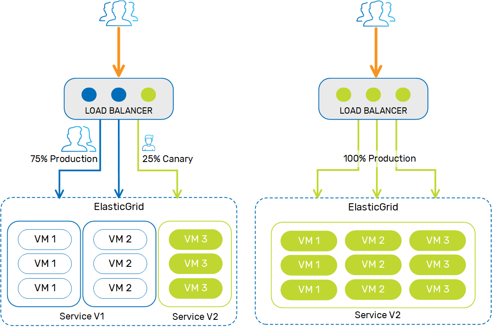
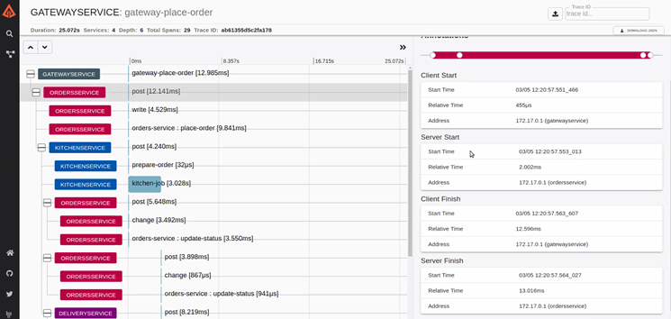

When using the simplest orchestration options, implementing
Organizations that have the resources may develop a script or a tool that handles the installation, provisioning and monitoring, otherwise the orchestration is completely manual.
A simpler and more robust level of orchestration is to use Kubernetes, which is an open-source container system for automating application deployment, scaling, and management. If you have a Kubernetes cluster, deploying
The GigaOps Stack reduces the complexity of all aspects required to implement
The GigaOps Stack is comprised of the following:
You can monitor and administer your environment using Ops Manager, and ElastiGrid includes pre-defined Grafana dashboards for self-monitoring.
The GigaOps Stack utilizes the DataOps approach, which takes DevOps best practices and applies them to managing data as a global asset in your organization. Using the GigaOps Stack provides auto-installation and provisioning of servers, networking, and security using gsctl, along with full orchestration and installing the
With the GigaOps Stack, the installation and configuration process is completely automated. This saves time and resources, and prevents errors that might otherwise occur due to manual configuration of the environment.
The GigaOps Stack supports canary deployment, so you can apply

As the load on your system gets larger or smaller, you may want the size of your cluster to adjust accordingly, to reduce spending on cloud services when they aren't necessary, or to maintain performance during peak times. With GigaOps Stack, your cluster can scale up or down automatically to support the current load.
You can implement
Benefit from high availability and robustness with the GigaOps Stack's ability to self-repair if a cluster node becomes unavailable or starts to fail.
ElastiGrid comes with pre-defined Grafana dashboards for monitoring your
ElastiGrid includes Zipkin, a distributed tracing system that gathers timing data to enable troubleshooting latency issues in the system. This enables more effective performance tuning.
